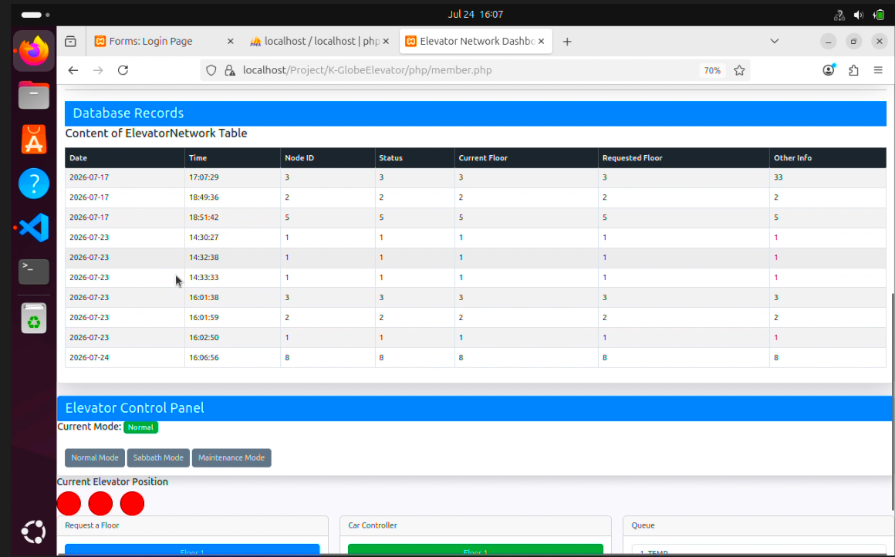
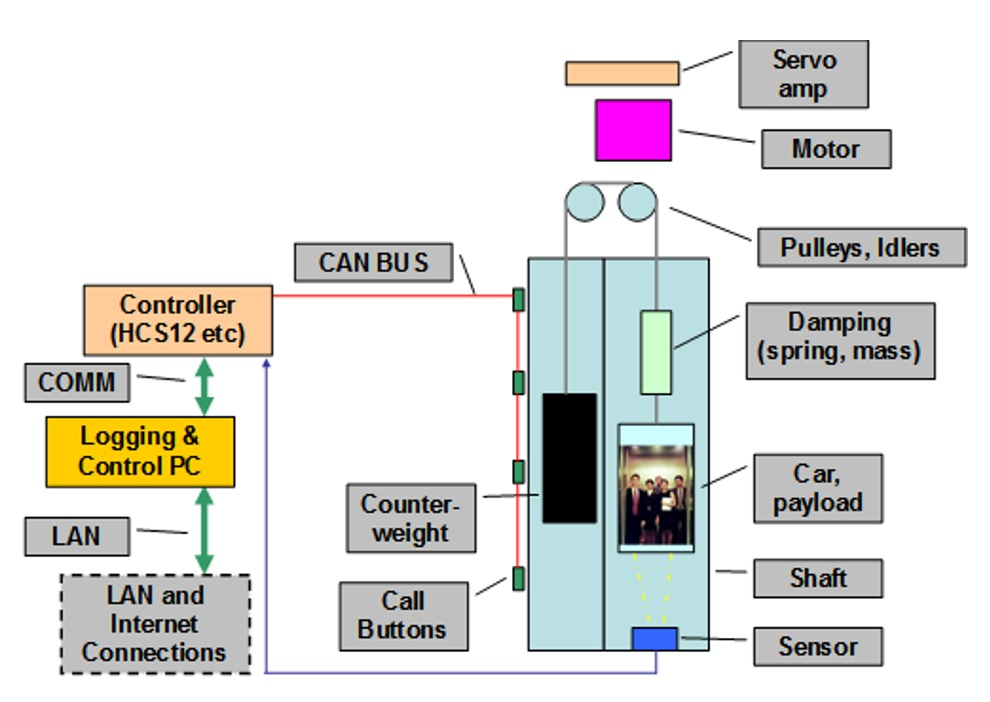

EMBEDDED SYSTEMS & WEB DEVELOPMENT
A distributed elevator control system combining embedded hardware, CAN communication, supervisory software, database integration, and a live web-based monitoring interface.
PROJECT OVERVIEW
This project involved developing a three-floor elevator system consisting of physical elevator hardware, CAN-connected control nodes, a supervisory controller, a database, and a web-based graphical user interface.
The different parts of the system communicate to allow elevator commands and status information to move between the physical hardware, control software, database, and web interface.
MY CONTRIBUTION
My primary contribution focused on the web interface and database portion of the elevator system. The goal was to provide a usable interface for monitoring the state of the elevator and interacting with system data.

The web dashboard provides access to elevator network records, operating modes, current elevator position, floor controls, and system information.
Displayed elevator information including the current floor and door status through the web interface.
Used MySQL to store and retrieve system information required by the elevator interface.
Developed a responsive interface using HTML, Bootstrap, PHP, and JavaScript.
Implemented authentication and database functionality for managing application users and system information.
SYSTEM DESIGN
The elevator brings together several hardware and software layers.

Elevator system hardware and CAN communication overview.
Physical elevator nodes, sensors, motors, buttons, and control electronics.
Handles communication between the CAN network and higher-level elevator software.
Stores elevator information used by the web application.
Provides elevator status and system information through the browser.
TECHNOLOGY
PROJECT GALLERY
Hardware, software, and development images from the elevator control system.